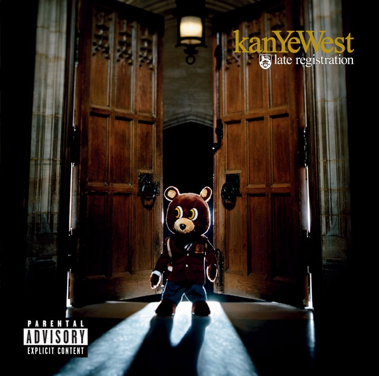
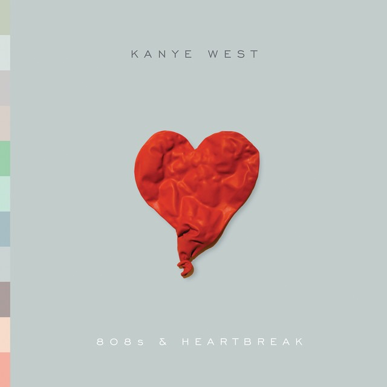
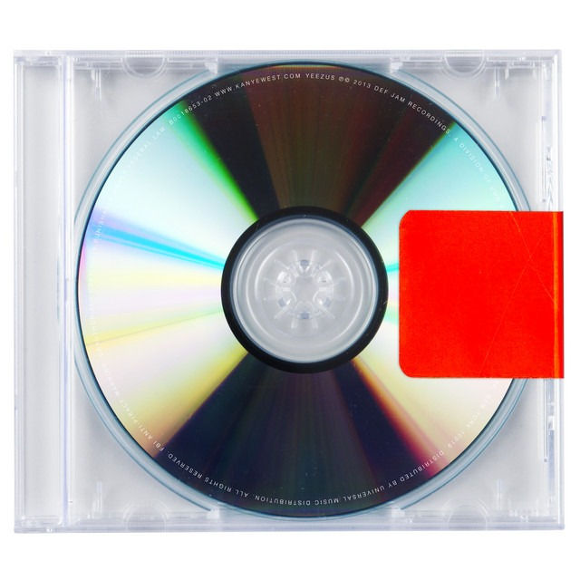
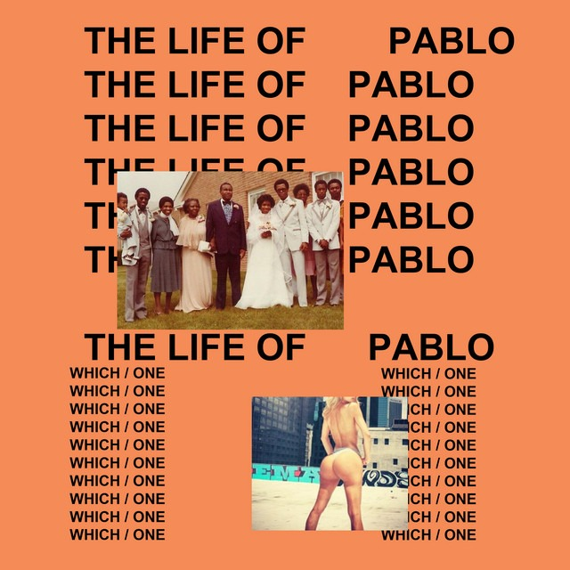
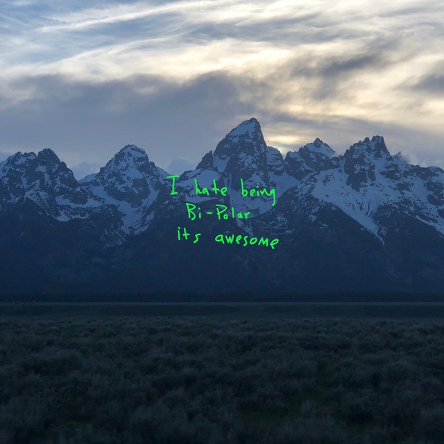
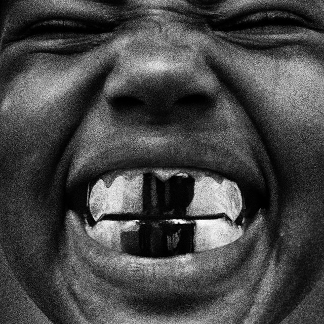

Kanye West (nascido em 8 de junho de 1977, Atlanta, Geórgia , EUA) é um produtor, rapper e designer de moda americano que transformou seu sucesso como produtor no final da década de 1990 e início dos anos 2000 em uma carreira como artista solo popular e aclamado pela crítica. Uma das celebridades mais controversas e influentes de sua geração, West atraiu notoriedade com uma persona pública que, por vezes, ofuscou sua música .
"I am the greatest human artist of all time." — Kanye West
| Capa | Álbum | Ano | N° de Faixas | Gênero |
|
|
The College Dropout | 2004 | 21 | Hip-Hop / Soul |
|  |
Late Registration | 2005 | 21 | Hip-Hop / Soul |
| |
Graduation | 2007 | 13 | Hip-Hop / Electro |
|  |
808s & Heartbreak | 2008 | 12 | Electro / R&B |
|
My Beautiful Dark Twisted Fantasy | 2010 | 13 | Hip-Hop |
 |
Yeezus | 2013 | 10 | Industrial / Hip-Hop |
 |
The Life of Pablo | 2016 | 18 | Hip-Hop / Gospel |
 |
Ye | 2018 | 8 | Hip-Hop |
| Donda | 2021 | 27 | Hip-Hop / Gospel | |
|  |
BULLY | 2026 | 18 | Hip-Hop / Soul |